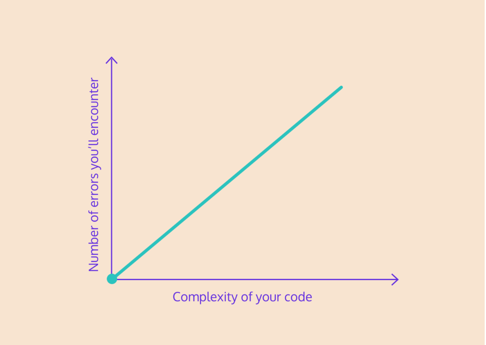
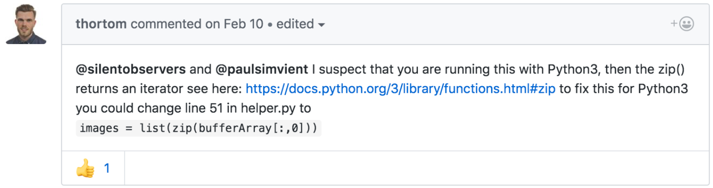
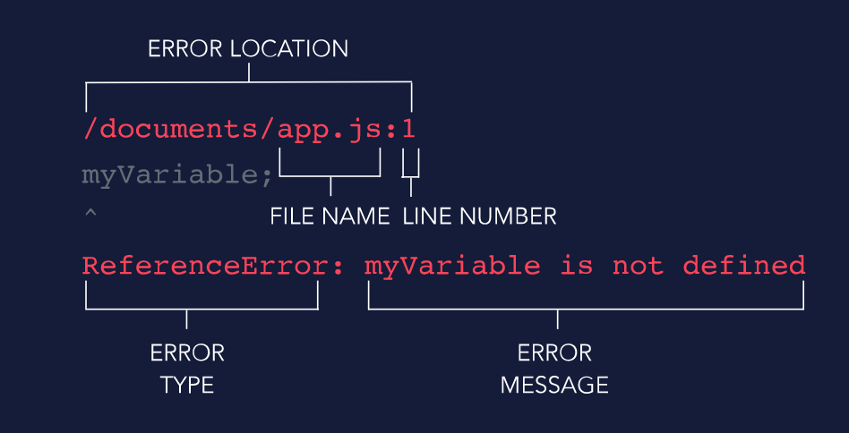

Errors in Your Code
Learning to code can be a frustrating endeavor because you are destined to encounter many red errors along the way. What makes programmer successful isn't avoiding errors-no programmer can avoid them. Great programmers understand that errors are the part of process, and they know how to find the solution to each while learning something new from them. In this article we will tell you to how to look at errors differentlt
Red is a beautiful color
We are conditioned by society to be afriad of the color red. STOP, DANGER, DO NOT ENTER, all loud red signs tells us to turn around, don't go in there, you will be hurt. It's so easy to carry that mindset to coding that many new programmers get discouraged and distraught over the red message their compiler split out.
They think, oh! no I have done something wrong again & clearly coding is not for me, even the computer knows, this is the wrong thinking! Every programmer, even the most experienced one encounter the errors all the time. In fact, belive it or not experienced programmers encounter more errors as compared to a new programmer.
Errors in your code mean you're trying to do something cool
consider the totally made up graph below:
As your code increase in complexity, the number of errors you'll encounter rises at a similar rate. An error means you're trying to do something which is complicated (or very complicated) and does'nt work yet, but by no means is it a sign that you should stop trying.
In fact, there are entire engineering roles built around finding and fixing errors. A site relibility engineer finds and report errors in web platforms. A test engineer built tests to automatically find errors in the software & make sure it meets companies standards.
Almost all major tech companies offer cash rewards to intrepid programmers to find bugs in their software. Google, Microsoft, Amazon all encourage users to find out bugs and reports if any.
Why do they do this? Why would major tech companies want their user to break their software? Because encountring your bugs is the best ways to improve your code. Bugs shows you where the weaknesses are, make you really consider what you want your code to acheive, then guide you towards building more reliable & secure products.
Tools to tackle code errors
You're right imaginary person in my head, celebrating an error isn't going to make that error go away. You have to be able to bust through the error to really start improving. Let's outline couple of steps to take to solve any compiler errors-errors that print out to the console as you code-that you might encounter.
The following steps will guide you through a standard error that might get thrown your way as you learn to code and they'll show you that errors aren't as scary as them seem. In fact, the steps are mostly a combination of reading the error carefully or copy pasting it in a Google Search.
1. Dissect the error
When an error first appears on your screen, find the line in the error specific to your code. Lot's of error messages have tons of boilerplate details that are'nt important to the actual error. You want to find that part in the error that gives you insight as to what happened.
I ran into error recently when I was trying to create a program that could store a list of grades for a bunch of classes a fictional student might be taking. I had a list of classes & a list of grades, & want to combine them into list of (class, grade) pairs that I could add & remove classes & grades from.
When I ran my code I encountered a following error:
Traceback (most recent call last):
File "script.py", line 9, in (<'module'>)
gradebook.append(("visual arts", 93)
AttributeError: 'zip' object has no attribute 'append'
Which line do we care about? Well, the first three are just taking care about where error occured, not what the error was. But the fourth line:
AttributeError: 'zip' object has no attribute 'append'
That's our error message! This is what went wrong. We may not know exactlt what it means yet, but we're on the path to finding out! We know that we used a zip object in our code, so that could be a great place to start.
2. Ask yourself, is the solution in the error?
Often, you will encounter syntax errors that will show exactly where the error occured and what the error was. When get these types of errors you can go back directly to your code & fix them. Here's an example of syntax error.
File "scrabble.py" , line 23
for player, words in players_to_words.items()^
SyntaxError: invalid syntax
Here I forgot to include a : at the end of my for statement. Notice that in this case, the compiler often points to exactly where the error occured with the ^ symbol, making it easier to fix.
3. Search for other people who have encountered this error
Often, step two will not apply, & you'll have to dive a little deeper into the error. Let's return to the gradebook error I encountered in step one. Since the solution isn't immediately obvious, I'm going to have to do a bit of searching online.
Copy & paste the important part of the error message into search engine & look through several pages if neccessary until you find someone else who has run into that issue. Google is always a good place to check, but another excellent resource to search through is Stack Overflow, which is a wonderful community of programmers sharing knowledge & building cool stuff.
I want to solve the error AttributeError: 'zip' object has no attribute to 'append', so I will Google search that line & will see what comes up. The first result I may find isn't super related, but that's okay!
3. Compare their use case to yours
Often you will not find someone who was trying to do the exact same thing you were trying to do, but who still encountered the same error. Read through their code a bit & see if it is comparable to yours.
Even if their code is wildly different, the one or two lines that threw the error might be very similar to your code, so the solution may end up being the same.
Consider my AttributeError. I found a result that did'nt seem related at all, but scrolling down to the third response I see:
I'm running Python3, & all he had do to fix his code was change images = zip(bufferArray[:,0]) to images = list(zip(bufferArray[:,0])). It's worth a shot!
5. Try to implement the solution
Tweak the code a bit to match your use case & give it a shot! Worst case is that the error doesn't go away and then you can try again. Best case is that it's fixed & you've learned what was casuing the error!
Every solution you implement is a new tool you can add to your programmer's toolbox, & another error you will know how to solve in the future.
Thankfully, thortom's solution was able to solve my issues with .zip() object. All I had to do was convert it into a list.
In the process of figuring out this compiler error, I learned that zip() doesn't return a list, it returns an iterator. I also learned that this is a new feature of Python3 that didn't exists in earlier version of Python2.7. See every error is a learning opportunity.
6. If it doesn't work, repeat steps 2-4
Keep searching through Slack Overflow & Google. The answer will be there! Sometimes its helpful to Google parts of the error message, not the entire line. Consider the AttributeError. If I Googles just ".zip()" object, I would learn lot of the same information that I got from Googling the full error.
The solutions to errors are out there, & the process to finding them will make you stronger & more confident programmer. As you grow & learn, expect to encounter countless error, & expect each one to be its own unique learning opportunity.
Debugging Overview
Any programmer will tell you that it is incredibly common to be making great progress working through a coding problem whenn all of a sudden an error like this gets thrown
/home/ccuser/workspace/learn-javascript-
debugging-code/app.js:1
"my_name".^capitalize();
TypeError: "my_name".capitalize is not
a function
...
Alternatively, you might have finally finished implementing a complex function only to find it doesn’t work at all as you expected:
console.log('The square root of 4 is '
+ squareRoot(4));
=> 'The square root of 4 is 1.87878787'
If any of these things happen to you, don’t fret! (be constantly or visibly anxious) In our article Thinking About Errors Differently in Your Code, you discovered that these experiences are normal for all developers, no matter how experienced they are. A key skill developers possess is knowing how to debug their code when issues occur.
This lesson will build on that article, demonstrating how to implement those skills in real-life JavaScript situations. If you haven’t had a chance to read the article yet, we highly encourage you to do so right now.
Error Stack Traces
We’ll start this lesson by taking a closer look at the most straightforward way to know your code isn’t working as expected: errors!
You might recognize errors as the scary red text that appears on your screen when you try to run broken code. A piece of software, called a compiler is trying to translate your code so that your computer can understand and run it. However, the compiler is coming across a piece of code that it can’t interpret. As a result, it throws an error back to you to let you know that it has to stop and why.
This information is logged as an error stack trace — a printed message containing information about where the error occurred, what type of error was thrown, and a description of the error.
Take a look at the diagram to see where you can find all of this information.
As a new programmer, it’s easy to see an error and be overcome with a sense of dread and self-doubt. However, you’ll soon realize, errors are the best kind of bug you can hope for, since they tell you exactly what went wrong and where.
Reading Error Stack Traces
Now that we know what information we can get from an error stack trace, let’s take a look at an example.
/home/ccuser/workspace/learn-javascript-
debugging-code/app.js:1
myVariable;
^
ReferenceError: myVariable is not defined
....
Using this stack trace, let’s answer three questions you should ask yourself every time you want to debug an error:
1. In what line did the error occur? You can almost always find this information on the first line of the stack trace in the following format <`file path>/<`file name>:<`line number>. In this example, the location is app.js:1. This means that the error was thrown in the file named app.js on line 1.
2. What type of error was thrown? The first word on the fifth line of the stack trace is the type of error that was thrown. In this case, the type of error was ReferenceError. We will discuss this error type in the next exercise.
3. What is the error message? The rest of the fifth line after the error type provides an error message, describing what went wrong. In this case, the description is myVariable is not defined.
JavaScript Error Types
Now that you can identify the type of error from an error stack trace, you might be wondering what the different types of errors mean.
Here are three common error types:
There are seven types of built-in JavaScript errors in total. You can find more information about all of them at the MDN JavaScript Errors. Whenever you are confronted with an error you can’t comprehend, consulting this documentation is a great place to start.
Debugging Errors
Here’s a process for efficiently working through your code’s errors one by one:
While these steps may seem simple, it can be easy to get overwhelmed by errors in practice. Using these steps, you can tackle your errors one at a time and soon will have your code running error-free.
Locating Silent Bugs
Errors thrown by the computer are really useful because they identify the bug type and location for you right away. However, even if your code runs error-free, it is not necessarily bug-free.
You may find that your code is consistently returning incorrect values without throwing any errors. A lack of thrown errors does not mean your code logic is completely correct.
An incredibly powerful tool for locating bugs is a method you likely learned very early on in your JavaScript journey: console.log()!
By adding print statements to our code, we can identify where things have gone wrong.
Finding Documentation
Sometimes once you’ve tracked down a bug, you might still be confused on how to fix it! Whenever you want to know more about how JavaScript works and what it can do, the best place to go is documentation. You can find the JavaScript documentation at the MDN JavaScript web docs.
The MDN JavaScript web docs are a powerful resource, but they can be overwhelming because they cover so much information. We encourage you to explore the docs, but often the fastest way to access a specific part of the docs you’re interested in is to Google it.
For example, if we wanted more information on the Number object’s .isNan() method, we could Google “MDN isNan” and then click the link to the MDN page. If we were looking to see a list of all of the String built-in methods, we might Google “MDN String”, click the link to MDN, and then scroll down to the “Methods” section of the documentation.
Stack Overflow
At this point, you might be thinking to yourself, documentation is good and all, but there’s no way it will solve all of my issues! And we totally agree. All programming languages have difficult problems and strange edge cases that appear unexpectedly and are sometimes impossible to solve alone.
If you are ever stuck trying to solve a coding problem, we strongly encourage you to Google for a solution. One of the best sites you will see appear in the search results is Stack Overflow
Stack Overflow is a question and answer forum where frustrated programmers post issues and other programmers discuss and vote for solutions. Almost always if you have an issue, Stack Overflow has an answer.
For example, say you are stumped trying to write an alphabetize function. If you search “alphabetize string JavaScript” on Google, this Stack Overflow search result will appear. You can quickly scan through the answers on it to see which ones work for you.
If you are ever programming and a problem is becoming so insurmountable that you want to quit, Stack Overflow is a great place to go to get unstuck.